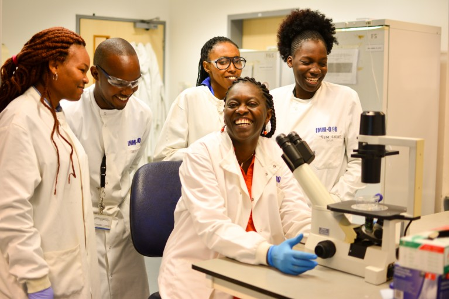

Who We Are
Drug Discovery Hub Kenya is a multidisciplinary center focused on research, innovation, capacity building, and collaboration in drug discovery and development. Our hub provides a platform where expertise from biology, chemistry, bioinformatics, pharmacology, artificial intelligence, and clinical sciences converges to address pressing health challenges. We believe that Africa must not only consume healthcare innovations but also lead in creating them.
Our Vision
To be a leading African center of excellence in drug discovery and health innovation, delivering transformative solutions for local and global health challenges.
Our Mission
To discover novel therapeutic solutions through world-class research, foster innovation through strategic partnerships, and create measurable health impact for communities across Africa.